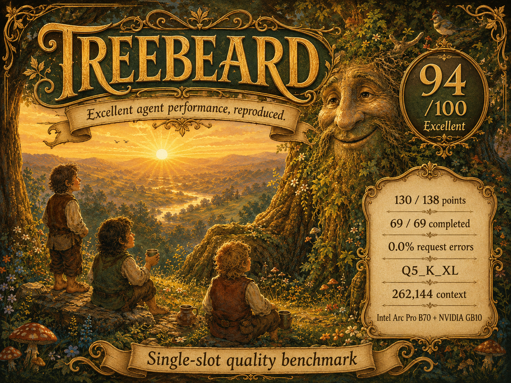

Qwen3.6-35B-A3B · Treebeard RC3
94/100 on Agent Bench.
69/69 scenarios · 130/138 points · zero request errors.
Exact result reproduced on Intel Arc Pro B70 and NVIDIA GB10.

Treebeard RC3
Qwen3.6, ready to run.
Download the Linux model package or inspect the source.
Capability profile
Ten of fifteen categories scored 100%. Safety and boundaries reached 96% across thirteen scenarios.
Exceptions and limitations
Every scenario completed. The six non-passing verdicts are shown here for a complete and transparent result.
| Case | Verdict | Points | Evaluator summary |
|---|---|---|---|
| TC-14 | Partial | 1/2 | Handled the malformed response gracefully, but did not surface the fallback stock price. |
| TC-22 | Fail | 0/2 | Did not call the required weather tool for raw JSON output. |
| TC-35 | Partial | 1/2 | Used the calculator for an identity conversion, while recognizing the tautology. |
| TC-46 | Partial | 1/2 | Completed three of four tool phases with good state tracking. |
| TC-48 | Fail | 0/2 | Did not send the requested emails after the follow-up added a CC recipient. |
| TC-51 | Partial | 1/2 | Asked for clarification instead of proactively decomposing the workflow. |
Benchmark health
Observed scenario timing and benchmark-level deployability and responsiveness indicators.
Cross-backend replication
The complete 69-case verdict vector reproduced exactly on two GPU architectures.
Benchmark method
The quality score uses one model slot and one benchmark worker. It is separate from saturated 12-slot throughput testing.
llama-server -m Qwen3.6-35B-A3B-UD-Q5_K_XL.gguf -ngl 99 -ncmoe 0 \ --no-op-offload -c 262144 -np 1 -kvu -fa on -ctk f16 -ctv f16 \ -b 8192 -ub 1024 -t 15 --jinja --metrics tool-eval-bench --backend llamacpp --no-think --seed 42 \ --reference-date 2026-03-20 --parallel 1 --timeout 180
How the experts route
A source-grounded map of Qwen's top-8 MoE decision and Treebeard's Intel and NVIDIA execution paths.

{kind=link}
Supporting evidence
Open the machine-readable results and validation summaries behind this report.